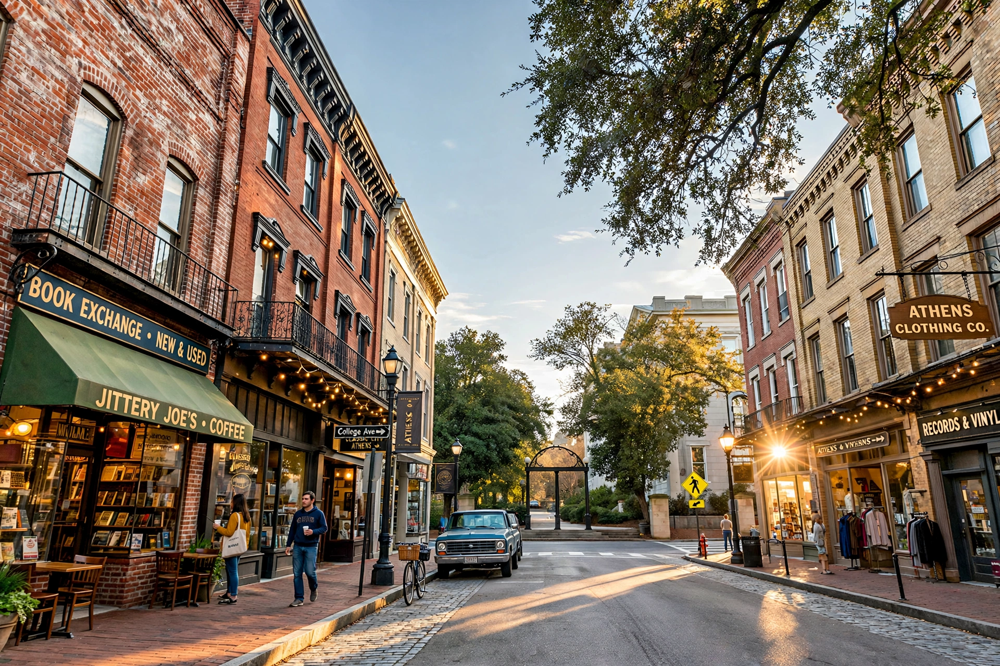

Athens, Georgia
| Athens, Georgia | |
|---|---|
| Country | United States |
| State | Georgia |
| County | Clarke |
| Incorporated | 1806 |
| Population (2020) | 127,315 (city–county balance) |
| Named for | Athens, Greece |

Athens is a consolidated city-county in the U.S. state of Georgia and the county seat of Clarke County. Located in northeastern Georgia along the Oconee River, about 70 miles (110 km) northeast of Atlanta, it is home to the University of Georgia, the state's flagship public research university and its oldest public university, chartered in 1785.
History
In 1801 a committee selected a site on Cedar Shoals on the Oconee River for the university, and the surrounding town grew up around it; Athens was incorporated in 1806 and named in honour of the Greek city that was the centre of learning in classical antiquity. In 1991 the city and Clarke County governments were unified, creating the consolidated government of Athens–Clarke County.
Culture
Athens is celebrated for its music scene, which emerged in the late 1970s and 1980s and produced influential alternative rock bands including R.E.M., The B-52's, Widespread Panic and of Montreal, as well as venues such as the 40 Watt Club and the Georgia Theatre. The city hosts the AthFest music and arts festival each year.
Education and economy
The University of Georgia, with more than 40,000 students, is the region's largest employer and the anchor of the local economy, alongside healthcare and a growing technology and manufacturing sector. The university's Georgia Bulldogs compete in NCAA Division I athletics, playing football at Sanford Stadium.
See also: University of Georgia · Georgia (U.S. state) · R.E.M.